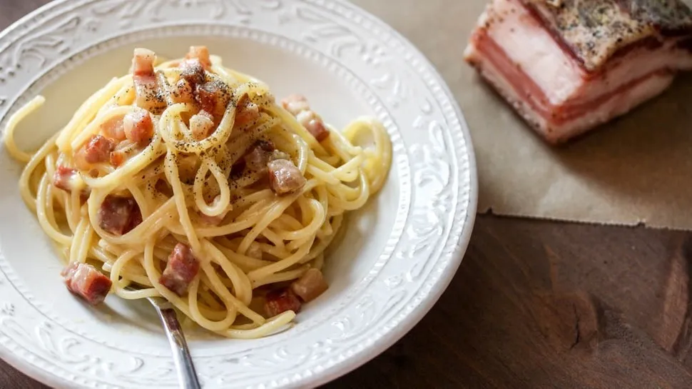

Spaghetti Carbonara

Description
»Spaghetti carbonaras are extremely popular – and more adulterated
than almost any other pasta dish. Not only hobby chefs often use
something in the preparation that does not belong in it, namely cream.
Thanks to the eggs, the Italian classic also tastes so creamy enough
and in combination with Pancetta bacon, pecorino, Parmesan cheese and
freshly ground pepper absolutely heavenly.«
Ingredients
- 250 g uncooked spaghetti
- 100 g bacon
- 1 garlic clove
- 2 tablespoons olive oil
- 2 egg yolks
- 1 extra egg
- 30 g grated pecorino romano
- 20 g grated parmesan
- salt, fresh ground pepper
Steps
- Cook spaghetti in salted water until firm.
- Dice bacon, peel garlic clove. Heat olive oil in a pan, sauté
the garlic for about two minutes until golden brown over medium heat,
then remove and fry the bacon in the oil until crispy.
- Whisk the eggs in a large bowl and mix with the cheese. Season
with a little black pepper.
- Remove some pasta water from the noodles and drain the spaghetti.
Immediately add to the bowl to the eggs and stir - so the eggs do not
falter - and add the bacon and garlic oil from the pan.
- Season with pepper - preferably freshly ground - and, if
necessary, salt.